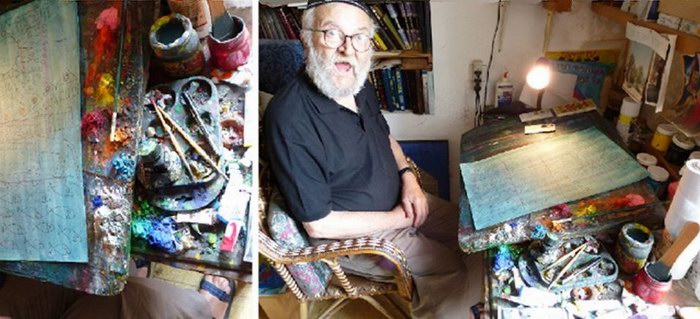
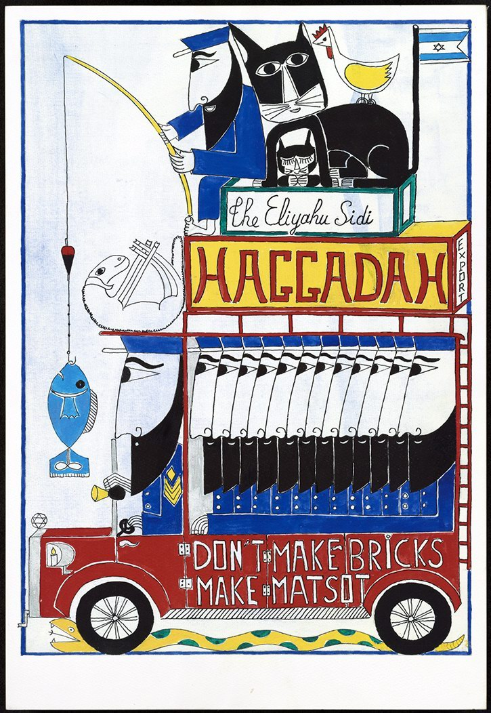
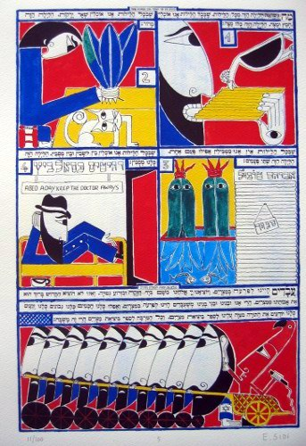
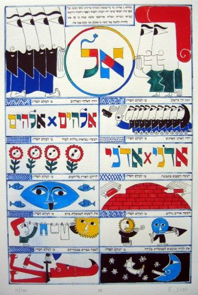

Contemporary Artists Interpret the Passover Haggadah
A remarkable artist of the Passover Haggadah: Eliyahu Sidi. His illustrations are a most powerful means of expressing his personal attitude to the events of three thousand years ago, his own point of view and his interpretation of the texts of the Torah and the tradition.

It is known that the traditional text of the Passover Haggadah had taken shape by the early Middle Ages and since then has been handed down from generation to generation in both Ashkenazi and Sephardi communities. The stormy flood of its visual interpretation and illustration, which began at the start of the 13th century, has not returned to its banks to this day. Today one can speak of an established iconography of the Passover Haggadah…
But while its textual part, the narrative and the prayers, is the product of the development of rabbinic thought, everything to do with its visual design can boldly be called the creativity of the people.
An approved and sanctified text was taken; the sofer did his work, leaving empty spaces between passages of text, and then the patron handed the haggadah over to an artist. It was not cheap, and only a well-to-do family could afford it. And, as they say, he who pays the piper calls the tune: the patron often told the artist his wishes and preferences, which did not always fit the canonical understanding of the images…
Here I want to introduce a wonderful designer of the haggadah, the religious artist Eliyahu Sidi from Jerusalem. His illustrations are a most powerful means of expressing his personal attitude to the events of three thousand years ago and his own point of view and interpretation of the texts of the Torah and the tradition.
The Passover Haggadah of Eliyahu Sidi of Jerusalem

The Four Questions

Sidi divides the pages of his Haggadah into parts. The two upper "storeys" of this page show the four traditional questions of "Ma nishtana", the answer to the questions of the youngest member of the family at the Seder table about how this night differs from all other nights: why do we eat matzah, why do we eat bitter herbs, why do we dip greens in salt water, and why do we lean back in our chairs and recline? The fourth picture shows a man half-lying, not at the Seder table but in a furniture shop called KISElevitz, a play on words (in Hebrew the word for chair is KISE). The drawing actually shows him lying on a bed rather than sitting in an armchair. The illustration is done with a sense of humour and is rather funny, but it brings out one of the ideas of the Passover Seder: that rest is the opposite of slavery and one of the privileges of freedom. This picture is a good example of how the sacred and the everyday intertwine in Sidi's art.
Hallel
An interpretation of the "Hallel" section (prayers based on the Book of Psalms).

Most Haggadah artists do not illustrate the "Hallel" (psalms) section of the Haggadah. Sidi, unlike them, illustrated the whole Seder, including this section. The loftiness of the poetry of the Psalms contrasts with Sidi's humorous approach. The page shown above illustrates elements of the hymn "O give thanks unto the LORD; for he is good: for his mercy endureth for ever" (Tehillim 136).
In the upper part Sidi illustrates the verses of this psalm with figures of Israelites, men and women. They hold a circle in which the word El (God) is written. One storey below, for the verse "To him who alone doeth great wonders: for his mercy endureth for ever" (Ps. 136:4), he has drawn flowers with smiling faces. For the verse "To him that made great lights: for his mercy endureth for ever" (Ps. 136:7), the artist shows the sun and the moon as two mischievous children.
A picture of a woman hanging out washing accompanies the verse "The sun to rule by day: for his mercy endureth for ever" (Ps. 136:8).

In this way Sidi, in his illustrations, gives a humorous, childlike understanding of and approach to a psalm that proclaims the rule of the Most High over the cosmos on the one hand and over the history of Israel on the other.
Author: Ephraim Kalish / Torah-Art
A three-minute film about Eliyahu Sidi: